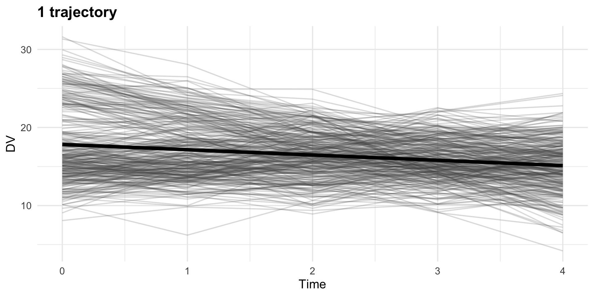
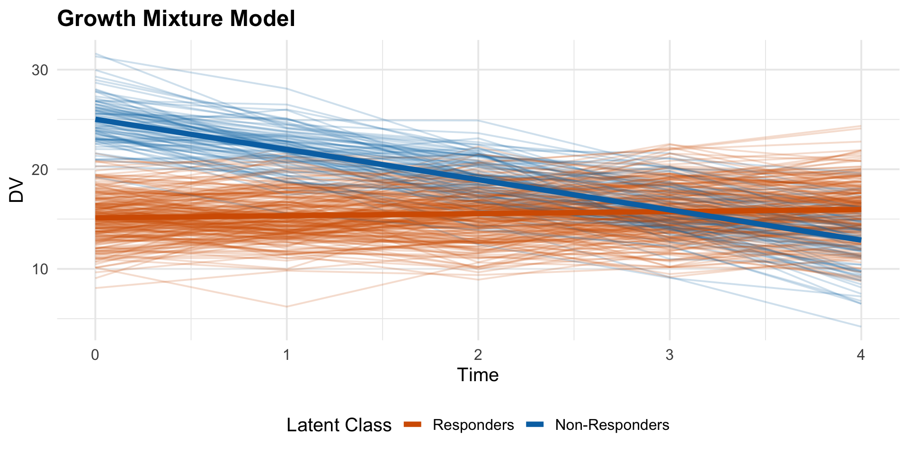
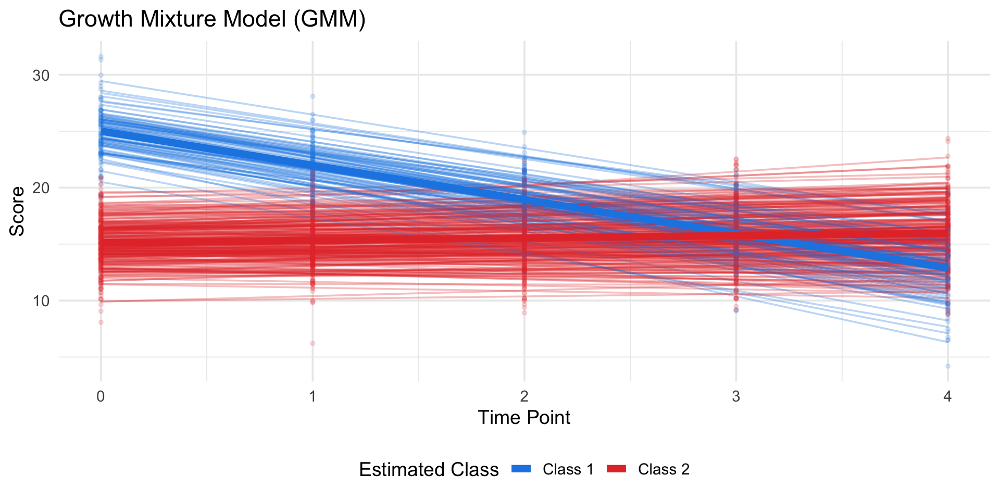
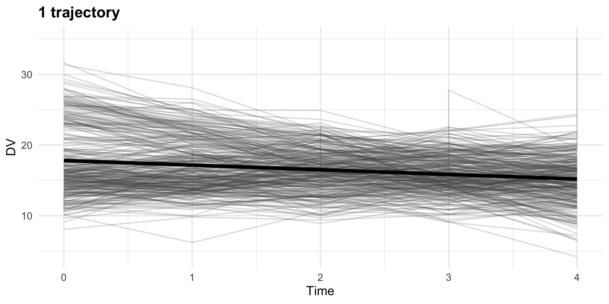
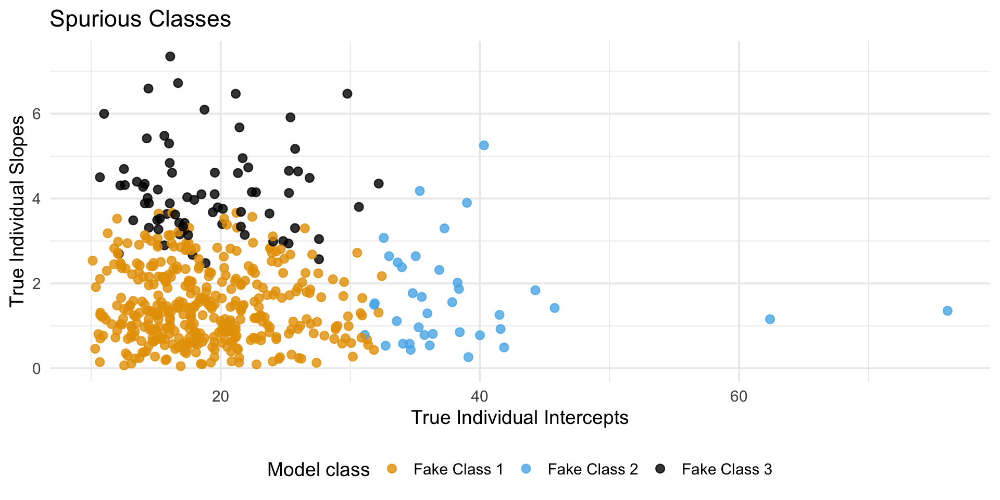
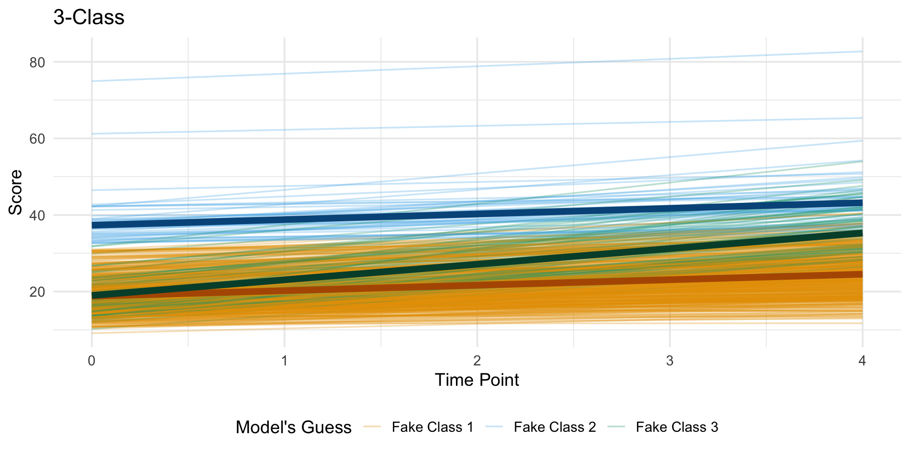

We’ve been differentiating lines via our covariates: time varying, time-invariant, or multiple processes
Moffitt’s theory on the development of antisocial and criminal behavior posited a developmental taxonomy consisting of two etiologically distinct groups. Onsets in adolescence and then desists in early adulthood, vs childhood onset but persists throughout adulthood.
Can we differentiate groups using just antisocial behavior?
Person vs variable centered
Most psych work is variable centered. The focus is on describing the relationships among variables.
Person-centered approaches, include methods such as cluster analysis, latent class analysis, and finite mixture modeling. The focus is on relationships among individuals, and the goal is to classify individuals into distinct groups or categories.
Data reduction
There is a parallel to this in how we reduce large amounts of data to more manageable numbers.
Low-d representations help us in terms of fewer parameters, better story telling, less computational problems.
many variables –> small number of variables via unsupervised learning.
Identify groups of individuals. Many variables –> small number of groups that explain the covariation
Clustering, Latent Class Analysis (LCA), Latent Profile Analysis (LPA)
Latent variable is discrete rather than continuous.
Both categorical and continuous
Factor Mixture Models: Assumes there are \(K\) populations, AND within each population, people vary on continuous factors.
Can use both categorical and continuous measures.
It captures differences in kind (two or more classes) AND degree (within a class, people have different levels of some covariate)
K means
The algorithm to find \(K\) number of clusters (e.g., \(K=3\)). It drops 3 random “centroids” (center points) into your data. It measures the Euclidean distance from every person to those centroids, assigns the person to the closest one, and then moves the centroid to the middle of its new group. It repeats this until the groups stop shifting.
K-means assumes every cluster is a perfect, equally-sized circle. It cannot handle clusters that are long and skinny (highly correlated variables) or clusters that have massive variance (people spread far apart)
Mixture models
Class Mixture Models as they are a “mixture” of several distinct, unobserved sub-populations (classes) mixed together. Differ from clustering as these are probabilistic vs distance based from k-means.
Latent Class Analysis (LCA): A mixture model where the observed variables are categorical/binary at a single point in time.
Latent Profile Analysis (LPA): A mixture model where the observed variables are continuous at a single point in time.
LPA
Every hidden subgroup (profile) in your data is a Multivariate Normal Distribution.
In K-Means, the “mountains” must be perfect circles of the exact same size. In LPA, you have parameters for Variance (how wide the mountain is) and Covariance (whether the mountain is tilted diagonally)
Mixtures
Often the DGP of our data are complex in that there could be multiple reasons someone responds the way they do. Mixture models allows us to fit more than one DGP at a time
\(K\): The total number of latent classes, \(\pi_{ik}\): The probability that individual \(i\) belongs to class \(k\). \(\mathcal{N}\): The Normal (Gaussian) distribution.
Expectation-Maximization (EM). Expectation, an educated guess, then maximization (MLE) based on the educated guess, iterate until fit is maximized. Use EM when data is incomplete or has hidden (latent) variables.
We don’t know the size and shape of our classes, and we don’t the probability of anyone belonging to these classes. If we knew one, we could estimate the other, however.
Typical procedure
Fit multiple models, with different number of classes.
Look at Entropy and class proportions. Entropy ranges from 0 to 1 and informs you on the distinctiveness of each profile from each other profile. .70 and up indicates distinctive profiles. You want to have > 5% sample in a class.
Model comparison via LRT or AIC/BIC
Difficulties with skew
Assumes data are generated from Gaussian normal distribution. With deviations coming from multiple populations (a mixture of pops).
But normality is a high bar to clear. How can one tell the difference between skewed or mixture of populations?
If asked a model will invent a classes to cover the skewed tail.
Understanding development
Take a typical growth model. Individual differences in change describe how people differ in their trajectories.
What if these differences could be described in a more simple manner?
Latent Class Growth Analysis (LCGA)
Homogeneity of variance across trajectories
Model assumes that every single person assigned to a class and everyone within that class follows the exact same trajectory
Growth Mixture Model (GMM)
It’s just Latent Profile Analysis applied to growth curves.
Or, it’s an extension of multiple group growth curve, but with unobserved groups.
Inside a class member’s are allowed to vary around it. The variance for the Intercept and the Slope within the class are freely estimated
Code
library(dplyr)library(tidyr)library(ggplot2)library(lcmm) set.seed(2026)N <-300time_points <-0:4class_assignment <-sample(1:2, N, replace =TRUE, prob =c(0.3, 0.7))df <-data.frame()for(i in1:N) {if(class_assignment[i] ==1) { true_int <-rnorm(1, mean =25, sd =2) # Class 1: Starts high true_slope <-rnorm(1, mean =-3, sd =0.5) # Class 1: Declines rapidly } else { true_int <-rnorm(1, mean =15, sd =2) # Class 2: Starts lower true_slope <-rnorm(1, mean =0.2, sd =0.5) # Class 2: Stays flat } scores <- true_int + (true_slope * time_points) +rnorm(5, 0, 1.5) temp_df <-data.frame(ID = i,True_Class =factor(class_assignment[i]),Time = time_points,Score = scores ) df <-rbind(df, temp_df)}p1 <-ggplot(df, aes(x = Time, y = Score, group = ID)) +geom_line(alpha =0.2, color ="gray30") +geom_smooth(aes(group =1), method ="lm", color ="black", size =2, se =FALSE) +theme_minimal(base_size =15) +labs(title ="1 trajectory",y ="DV") +theme(plot.title =element_text(face ="bold"))p1

Code
p2 <-ggplot(df, aes(x = Time, y = Score, group = ID, color = True_Class)) +geom_line(alpha =0.2) +geom_smooth(aes(group = True_Class), method ="lm", size =2, se =FALSE) +scale_color_manual(values =c("#D55E00", "#0072B2"), labels =c("Responders", "Non-Responders")) +theme_minimal(base_size =15) +labs(title ="Growth Mixture Model",y ="DV",color ="Latent Class") +theme(plot.title =element_text(face ="bold"),legend.position ="bottom")print(p2)

Visualization
Can be thought of a latent growth model with a latent class variable predicting intercept and slope.
start with simple growth model
Code
library(lme4)fit_model <-lmer(Score ~ Time + (Time | ID), data = df)summary(fit_model)
Linear mixed model fit by REML ['lmerMod']
Formula: Score ~ Time + (Time | ID)
Data: df
REML criterion at convergence: 6943.3
Scaled residuals:
Min 1Q Median 3Q Max
-2.5846 -0.5422 0.0072 0.5463 2.7217
Random effects:
Groups Name Variance Std.Dev. Corr
ID (Intercept) 23.344 4.832
Time 2.327 1.525 -0.87
Residual 2.155 1.468
Number of obs: 1500, groups: ID, 300
Fixed effects:
Estimate Std. Error t value
(Intercept) 17.82834 0.28657 62.213
Time -0.67627 0.09205 -7.347
Correlation of Fixed Effects:
(Intr)
Time -0.869
Code
library(marginaleffects)ind_predictions <-predictions(fit_model, newdata = df)pop_predictions <-predictions(fit_model, newdata =datagrid(Time =0:4), re.form =NA)ggplot() +geom_point(data = df, aes(x = Time, y = Score), color ="gray60", alpha =0.2, size =1) +geom_line(data = ind_predictions, aes(x = Time, y = estimate, group = ID), color ="gray50", alpha =0.4) +geom_ribbon(data = pop_predictions, aes(x = Time, ymin = conf.low, ymax = conf.high), fill ="#E53935", alpha =0.2) +geom_line(data = pop_predictions, aes(x = Time, y = estimate), color ="#E53935", size =1.5) +theme_minimal(base_size =14) +scale_x_continuous(breaks =0:4) +labs(title ="Model-Implied Trajectories",x ="Time Point",y ="Score")
library(lcmm)m1 <-hlme(Score ~ Time, subject ="ID", ng =1, # number of classesdata = df)m2_lcga <-hlme(Score ~ Time, mixture =~ Time, subject ="ID", ng =2, data = df, B = m1) # Feeds the starting values from the 1-class model to help the math convergesummary(m2_lcga)
Heterogenous linear mixed model
fitted by maximum likelihood method
hlme(fixed = Score ~ Time, mixture = ~Time, subject = "ID", ng = 2,
data = df)
Statistical Model:
Dataset: df
Number of subjects: 300
Number of observations: 1500
Number of latent classes: 2
Number of parameters: 6
Iteration process:
Convergence criteria satisfied
Number of iterations: 10
Convergence criteria: parameters= 1.7e-09
: likelihood= 6e-08
: second derivatives= 8e-15
Goodness-of-fit statistics:
maximum log-likelihood: -3765.01
AIC: 7542.02
BIC: 7564.24
Maximum Likelihood Estimates:
Fixed effects in the class-membership model:
(the class of reference is the last class)
coef Se Wald p-value
intercept class1 0.90148 0.13182 6.839 0.00000
Fixed effects in the longitudinal model:
coef Se Wald p-value
intercept class1 15.01204 0.14884 100.864 0.00000
intercept class2 24.76562 0.25252 98.075 0.00000
Time class1 0.20016 0.05920 3.381 0.00072
Time class2 -2.83514 0.10983 -25.813 0.00000
coef Se
Residual standard error: 2.65744 0.04905
Code
class_assignments <- m2_lcga$pprob %>%select(ID, Estimated_Class = class)df_plot <- df %>%left_join(class_assignments, by ="ID") %>%mutate(Estimated_Class =factor(Estimated_Class, labels =c("Estimated Class 1", "Estimated Class 2")))# unfortunately marginaleffects does not work with this packagetime_grid <-data.frame(Time =0:4)pred_trajectories <-predictY(m2_lcga, newdata = time_grid, var.time ="Time")pred_df <-data.frame(Time =rep(0:4, 2),Estimated_Class =factor(rep(1:2, each =5), labels =c("Estimated Class 1", "Estimated Class 2")),Predicted_Score =c(pred_trajectories$pred[, 1], pred_trajectories$pred[, 2]))ggplot() +geom_line(data = df_plot, aes(x = Time, y = Score, group = ID, color = Estimated_Class), alpha =0.2) +geom_point(data = df_plot, aes(x = Time, y = Score, color = Estimated_Class), alpha =0.2, size =1) +geom_line(data = pred_df, aes(x = Time, y = Predicted_Score, color = Estimated_Class), size =2) +theme_minimal(base_size =14) +scale_color_manual(values =c("#E53935", "#1E88E5")) +scale_x_continuous(breaks =0:4) +labs(title ="Latent Class Growth Analysis (LCGA)",x ="Time Point",y ="Score",color ="Class Assignment") +theme(legend.position ="bottom")
m3_lcga <-hlme(Score ~ Time, mixture =~ Time, subject ="ID", ng =3, data = df, B = m1)# built in function from lccacomparison_table <-summarytable(m1, m2_lcga, m3_lcga)
m1_gmm <-hlme(Score ~ Time, random =~ Time, #new!subject ="ID", ng =1, data = df)m2_gmm <-hlme(Score ~ Time, mixture =~ Time, random =~ Time, subject ="ID", ng =2, data = df, B = m1_gmm)m3_gmm <-hlme(Score ~ Time, mixture =~ Time, random =~ Time, subject ="ID", ng =3, data = df, B = m1_gmm)summarytable(m1_gmm, m2_gmm, m3_gmm)
Lo-Mendell-Rubin ad-hoc adjusted likelihood ratio rest:
LR = 1.937, LMR LR (df = 3) = 1.830, p = 0.609
summary(m2_gmm)
Heterogenous linear mixed model
fitted by maximum likelihood method
hlme(fixed = Score ~ Time, mixture = ~Time, random = ~Time, subject = "ID",
ng = 2, data = df)
Statistical Model:
Dataset: df
Number of subjects: 300
Number of observations: 1500
Number of latent classes: 2
Number of parameters: 9
Iteration process:
Convergence criteria satisfied
Number of iterations: 28
Convergence criteria: parameters= 7.9e-09
: likelihood= 4.6e-07
: second derivatives= 3.3e-14
Goodness-of-fit statistics:
maximum log-likelihood: -3340.77
AIC: 6699.55
BIC: 6732.88
Maximum Likelihood Estimates:
Fixed effects in the class-membership model:
(the class of reference is the last class)
coef Se Wald p-value
intercept class1 0.97078 0.12997 7.469 0.00000
Fixed effects in the longitudinal model:
coef Se Wald p-value
intercept class1 15.11185 0.15394 98.169 0.00000
intercept class2 24.99987 0.25160 99.365 0.00000
Time class1 0.21382 0.04546 4.704 0.00000
Time class2 -3.02610 0.07466 -40.532 0.00000
Variance-covariance matrix of the random-effects:
intercept Time
intercept 3.78022
Time -0.03996 0.22657
coef Se
Residual standard error: 1.46784 0.03460
assumes same variability (random effects)
Code
m2_gmm_varying <-hlme(Score ~ Time, mixture =~ Time, random =~ Time, subject ="ID", ng =2, nwg =TRUE, # THE SWITCHdata = df, B = m1_gmm)
To have fully unrestricted matrices, you need more advanced packages, like tidySEM.
Code
summary(m2_gmm_varying)
Heterogenous linear mixed model
fitted by maximum likelihood method
hlme(fixed = Score ~ Time, mixture = ~Time, random = ~Time, subject = "ID",
ng = 2, nwg = TRUE, data = df)
Statistical Model:
Dataset: df
Number of subjects: 300
Number of observations: 1500
Number of latent classes: 2
Number of parameters: 10
Iteration process:
Convergence criteria satisfied
Number of iterations: 27
Convergence criteria: parameters= 1.4e-06
: likelihood= 7e-05
: second derivatives= 6.3e-11
Goodness-of-fit statistics:
maximum log-likelihood: -3340.32
AIC: 6700.65
BIC: 6737.68
Maximum Likelihood Estimates:
Fixed effects in the class-membership model:
(the class of reference is the last class)
coef Se Wald p-value
intercept class1 -0.97296 0.13005 -7.481 0.00000
Fixed effects in the longitudinal model:
coef Se Wald p-value
intercept class1 25.00721 0.24046 103.998 0.00000
intercept class2 15.11500 0.15660 96.517 0.00000
Time class1 -3.02858 0.07255 -41.747 0.00000
Time class2 0.21282 0.04602 4.625 0.00000
Variance-covariance matrix of the random-effects:
intercept Time
intercept 3.95771
Time -0.04159 0.23779
coef Se
Proportional coefficient class1 0.91682 0.08355
Residual standard error: 1.46733 0.03457
class_assignments <- m2_gmm$pprob %>%select(ID, Estimated_Class = class)df_plot_gmm <- df %>%left_join(class_assignments, by ="ID") %>%mutate(pred_ss1 = m2_gmm$pred$pred_ss1,pred_ss2 = m2_gmm$pred$pred_ss2,Fitted_Ind_Score =ifelse(Estimated_Class ==1, pred_ss1, pred_ss2),Estimated_Class =factor(Estimated_Class, labels =c("Class 1", "Class 2")) )time_grid <-data.frame(Time =0:4)class_trajectories <-predictY(m2_gmm, newdata = time_grid, var.time ="Time")pred_df_gmm <-data.frame(Time =rep(0:4, 2),Estimated_Class =factor(rep(1:2, each =5), labels =c("Class 1", "Class 2")),Predicted_Score =c(class_trajectories$pred[, 1], class_trajectories$pred[, 2]))ggplot() +geom_line(data = df_plot_gmm, aes(x = Time, y = Fitted_Ind_Score, group = ID, color = Estimated_Class), alpha =0.3) +geom_point(data = df_plot_gmm, aes(x = Time, y = Score, color = Estimated_Class), alpha =0.15, size =1) +geom_line(data = pred_df_gmm, aes(x = Time, y = Predicted_Score, color = Estimated_Class), size =2.5) +theme_minimal(base_size =14) +scale_color_manual(values =c("#E53935", "#1E88E5")) +scale_x_continuous(breaks =0:4) +labs(title ="Growth Mixture Model (GMM)",x ="Time Point",y ="Score",color ="Estimated Class") +theme(legend.position ="bottom")
Code
class_assignments <- m2_gmm_varying$pprob %>%select(ID, Estimated_Class = class)df_plot_gmm <- df %>%left_join(class_assignments, by ="ID") %>%mutate(pred_ss1 = m2_gmm_varying$pred$pred_ss1,pred_ss2 = m2_gmm_varying$pred$pred_ss2,Fitted_Ind_Score =ifelse(Estimated_Class ==1, pred_ss1, pred_ss2),Estimated_Class =factor(Estimated_Class, labels =c("Class 1", "Class 2")) )time_grid <-data.frame(Time =0:4)class_trajectories <-predictY(m2_gmm_varying, newdata = time_grid, var.time ="Time")pred_df_gmm <-data.frame(Time =rep(0:4, 2),Estimated_Class =factor(rep(1:2, each =5), labels =c("Class 1", "Class 2")),Predicted_Score =c(class_trajectories$pred[, 1], class_trajectories$pred[, 2]))ggplot() +geom_line(data = df_plot_gmm, aes(x = Time, y = Fitted_Ind_Score, group = ID, color = Estimated_Class), alpha =0.3) +geom_point(data = df_plot_gmm, aes(x = Time, y = Score, color = Estimated_Class), alpha =0.15, size =1) +geom_line(data = pred_df_gmm, aes(x = Time, y = Predicted_Score, color = Estimated_Class), size =2.5) +theme_minimal(base_size =14) +scale_color_manual(values =c( "#1E88E5", "#E53935")) +scale_x_continuous(breaks =0:4) +labs(title ="Growth Mixture Model (GMM)",x ="Time Point",y ="Score",color ="Estimated Class") +theme(legend.position ="bottom")

Issues
Trying to estimate the mean, the variance, and the covariance for the intercept and slope for every single class can lead to computation problems.
May need to simplify. Like LCGA. OR a simple growth model.
Multivariate guassian
GMMs assume that every hidden class is a perfectly symmetrical, normal distribution. But that is likely a high bar to clear, especially with psychological data.
But the model doesn’t know that, so it will invent a second, fake class (or more) to cover the skewed tail.
Salsa models
Always comes in mild medium and spicy. Patterns of high, medium, and low are not qualitatively distinct
If you take a continuous variable (like a trajectory slope) and chop it into categorical buckets (classes), you are mathematically destroying information
If that logic applies to dichotomized data, why not for GMMs?
simulated data
will we be able to find differences if they are slight?
Code
set.seed(2026)N <-300time_points <-0:4class_assignment <-sample(1:2, N, replace =TRUE, prob =c(0.3, 0.7))df2 <-data.frame()for(i in1:N) {if(class_assignment[i] ==1) { true_int <-rnorm(1, mean =15, sd =5) # Class 1 true_slope <-rnorm(1, mean =0, sd =5) # Class 1 } else { true_int <-rnorm(1, mean =12, sd =5) # Class 2 true_slope <-rnorm(1, mean =1.5, sd =5) # Class 2 } scores <- true_int + (true_slope * time_points) +rnorm(5, 0, 1.5) temp_df <-data.frame(ID = i,True_Class =factor(class_assignment[i]),Time = time_points,Score = scores ) df2 <-rbind(df, temp_df)}p2 <-ggplot(df2, aes(x = Time, y = Score, group = ID)) +geom_line(alpha =0.2, color ="gray30") +geom_smooth(aes(group =1), method ="lm", color ="black", size =2, se =FALSE) +theme_minimal(base_size =15) +labs(title ="1 trajectory",y ="DV") +theme(plot.title =element_text(face ="bold"))p2

Code
m1_gmm2 <-hlme(Score ~ Time, random =~ Time, subject ="ID", ng =1, data = df2)m2_gmm2 <-hlme(Score ~ Time, mixture =~ Time, random =~ Time, subject ="ID", ng =2, data = df2, B = m1_gmm2)m3_gmm2 <-hlme(Score ~ Time, mixture =~ Time, random =~ Time, subject ="ID", ng =3, data = df2, B = m1_gmm2)summarytable(m1_gmm2, m2_gmm2, m3_gmm2)
set.seed(123) N <-500time_points <-0:4df_spurious <-data.frame()params_spurious <-data.frame()for(i in1:N) { true_int <-rgamma(1, shape =2, rate =0.2) +10 true_slope <-rgamma(1, shape =2, rate =1) scores <- true_int + (true_slope * time_points) +rnorm(5, 0, 1.5) temp_df <-data.frame(ID = i,True_Class =factor(1), Time = time_points,Score = scores ) df_spurious <-rbind(df_spurious, temp_df) params_spurious <-rbind(params_spurious, data.frame(ID = i, True_Int = true_int, True_Slope = true_slope ))}m1_spur <-hlme(Score ~ Time, random =~ Time, subject ="ID", ng =1, data = df_spurious)m2_spur <-hlme(Score ~ Time, mixture =~ Time, random =~ Time, subject ="ID", ng =2, data = df_spurious, B = m1_spur)m3_spur <-hlme(Score ~ Time, mixture =~ Time, random =~ Time, subject ="ID", ng =3, data = df_spurious, B = m1_spur)summarytable(m1_spur, m2_spur, m3_spur)
fake_classes2 <- m3_spur$pprob %>% dplyr::select(ID, Estimated_Class = class) %>%mutate(Estimated_Class =factor(Estimated_Class, levels =c(1, 2,3), labels =c("Fake Class 1", "Fake Class 2", "Fake Class 3")))plot_data2 <- params_spurious %>%left_join(fake_classes2, by ="ID")ggplot(plot_data2, aes(x = True_Int, y = True_Slope, color = Estimated_Class)) +geom_point(alpha =0.8, size =2.5) +scale_color_manual(values =c("#E69F00", "#56B4E9", "black")) +theme_minimal(base_size =14) +labs(title ="Spurious Classes",x ="True Individual Intercepts",y ="True Individual Slopes",color ="Model class") +theme(legend.position ="bottom")

Code
class_assignments3 <- m3_spur$pprob %>% dplyr::select(ID, Estimated_Class = class) %>%mutate(Estimated_Class =factor(Estimated_Class, levels =c(1, 2, 3), labels =c("Fake Class 1", "Fake Class 2", "Fake Class 3")))df_plot_spur3 <- df_spurious %>%left_join(class_assignments3, by ="ID") %>%mutate(pred_ss1 = m3_spur$pred$pred_ss1,pred_ss2 = m3_spur$pred$pred_ss2,pred_ss3 = m3_spur$pred$pred_ss3,Fitted_Ind_Score =case_when( Estimated_Class =="Fake Class 1"~ pred_ss1, Estimated_Class =="Fake Class 2"~ pred_ss2, Estimated_Class =="Fake Class 3"~ pred_ss3 ) )time_grid <-data.frame(Time =0:4)class_traj3 <-predictY(m3_spur, newdata = time_grid, var.time ="Time")pred_df_spur3 <-data.frame(Time =rep(0:4, 3),Estimated_Class =factor(rep(1:3, each =5), labels =c("Fake Class 1", "Fake Class 2", "Fake Class 3")),Predicted_Score =c(class_traj3$pred[, 1], class_traj3$pred[, 2], class_traj3$pred[, 3]))ggplot() +geom_line(data = df_plot_spur3, aes(x = Time, y = Fitted_Ind_Score, group = ID, color = Estimated_Class), alpha =0.3) +geom_line(data =filter(pred_df_spur3, Estimated_Class =="Fake Class 1"), aes(x = Time, y = Predicted_Score), color ="#B35900", size =2.5) +geom_line(data =filter(pred_df_spur3, Estimated_Class =="Fake Class 2"), aes(x = Time, y = Predicted_Score), color ="#00558A", size =2.5) +geom_line(data =filter(pred_df_spur3, Estimated_Class =="Fake Class 3"), aes(x = Time, y = Predicted_Score), color ="#004D38", size =2.5) +theme_minimal(base_size =14) +scale_color_manual(values =c("#E69F00", "#56B4E9", "#009E73")) +scale_x_continuous(breaks =0:4) +labs(title ="3-Class",x ="Time Point",y ="Score",color ="Model's Guess") +theme(legend.position ="bottom")

Theory testing
Given that you will likely find classes, as it is a data reduction technique, you have to ask yourself if you think classes are real
Normal growth model is simply a 1-Class GMM. So we can directly compare model fit.
Reification of classes
Are groups heuristic or real?
The odds of being in group Y relative to group Z increase twofold if you have characteristic W,” have little apparent meaning if the groups are mere figments of the analysis and unstable from one study to the next.
When could a GMM win?
Kind vs degree.
If you are dealing with a fundamentally non-linear, interactive, or qualitative shift.
Related models
Longitudinal Latent Class Analysis (LLCA). Ignores the longitudinal nature of the data and just runs an LCA(or LPA)